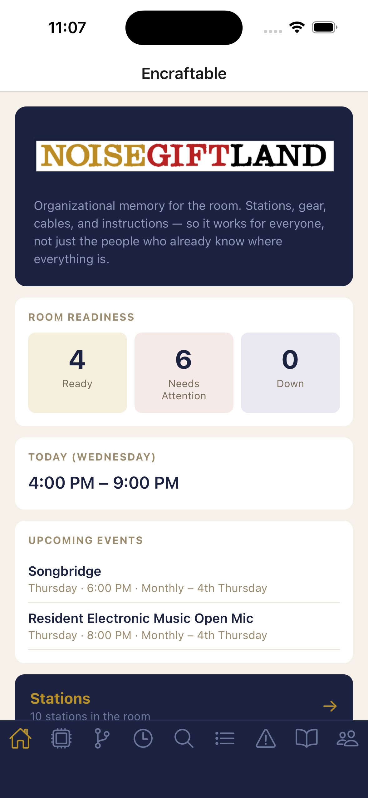
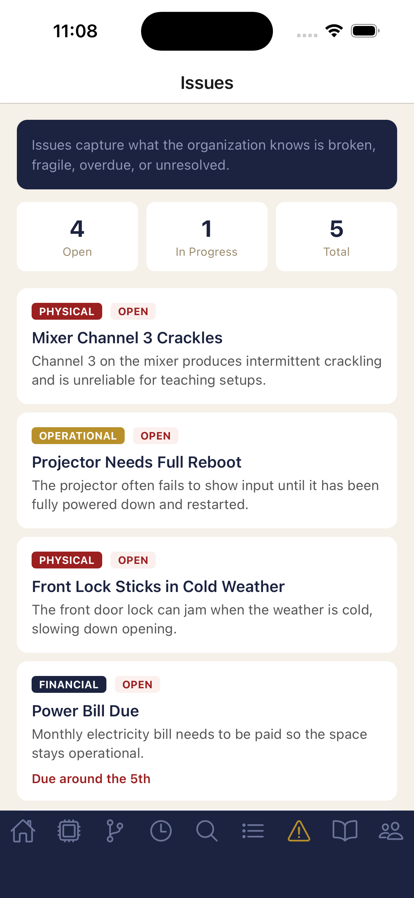
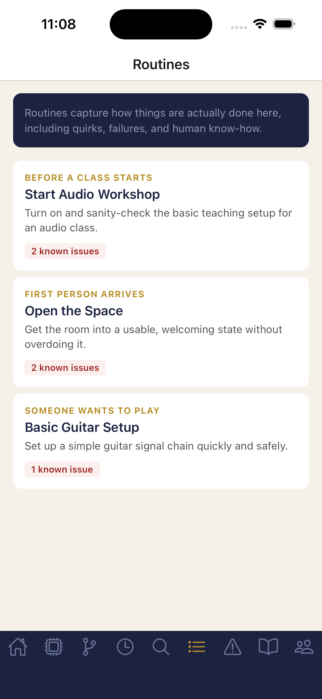
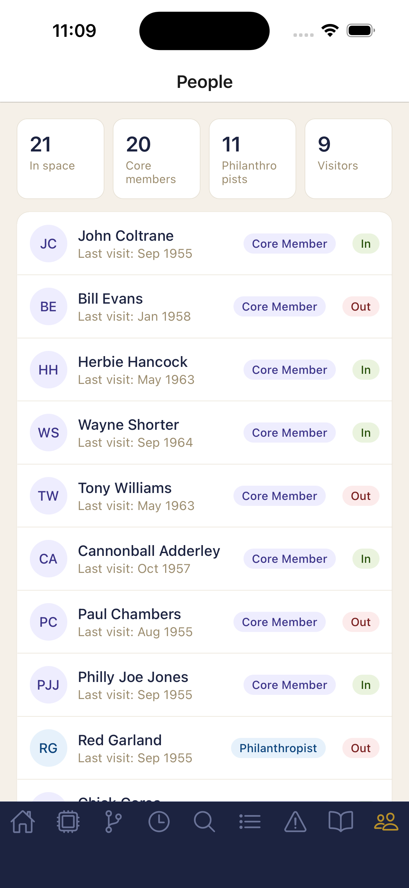

Encraftable
A React Native iOS prototype for makerspace organizational memory — stations, gear, cables, and instructions, so the room works for everyone who walks in, not just the people who already know where everything is.









← scroll to see all screens
The Challenge
Makerspaces run on volunteer stewardship. Equipment gets donated, set up by someone who knows how it works, and maintained by whoever cares enough to show up. When that person moves on — and they always do — what they knew goes with them. The result is a room full of gear that technically works but practically doesn't, because nobody knows the power sequence for the organ, which cable goes where, or who to ask when the mixing board stops responding.
Inventory software doesn't solve this. A list of items with condition fields tells you what's there. It doesn't tell you whether the station is actually playable right now, what the setup sequence is for a first-timer, or why there's a note taped to the bass amp that says "don't touch the red knob." The real problem is organizational memory.
What I Designed
A mobile app that treats the station — not the individual item — as the primary unit of information. A station is a fully configured playing position: Guitar Station 1, Hammond Station, Recording Station. The question the app answers is not "what gear is in this room" but "can I actually use this station right now, and how do I do it."
Each station record contains:
- A readiness status — Ready, Needs Attention, or Down — with a plain-language explanation
- A complete gear list with condition and status for each item
- A cable diagram showing every assigned cable by type, length, label, and condition
- A prose instruction sheet written for someone who has never touched the equipment
- A quirks field for accumulated lore that doesn't fit formal documentation
Cables are first-class objects, not fields on gear records. A cable has a type, a length, a condition, an assignment, and a physical label that matches the label on the cable itself. The spare bin is a distinct concept — unassigned cables available to borrow — and its contents are surfaced by type on each station detail screen.
The app also surfaces room hours, recurring events with the stations they use, steward contacts with their areas of expertise, and availability notes for shared equipment.
Key Design Decisions
Station as the primary unit, not the item
The instinct in inventory software is to start with the item. I started with the station because that's the unit that matters to the person walking in. A guitarist doesn't care that there's an Ibanez acoustic and a Fender combo amp in the room. They care whether Guitar Station 1 is set up and ready to play. Readiness lives at the station level. Gear and cables are supporting evidence.
Cables as first-class objects
Cables are the most common reason a station fails to work. They break, they disappear, they get borrowed and not returned, and nobody notices until someone sits down to play and nothing happens. Making cables a first-class entity — with their own records, conditions, assignments, and a labeled spare bin — turns a chronic invisible problem into a visible, manageable one.
Instructions written for the person who has never been here before
Every station has a full prose onboarding sheet: step-by-step, written plainly, covering power sequence, basic settings, and how to leave the station for the next person. These instructions are the thing that survives steward turnover.
Honest about partial truth
The app does not normalize incomplete data into false completeness. Bass Station has no bass guitar assigned — the app says so plainly. The turntable signal chain is unverified — the app says that too. Empty states are honest: "No instrument currently assigned to this station." The room is a work in progress and the app reflects that, because pretending otherwise makes the app useless the moment someone relies on it.
Component architecture designed for reuse
Screens don't talk directly to the data. Helper functions — getStation, getGearForStation, getCablesForStation, getReadinessCount — sit between the data layer and the UI so new screens don't require new data logic. This is a prototype, but it's built as if it's going to grow.
Research Foundation
The Noisegiftland install is grounded in field research on real makerspace failure modes. High member turnover is endemic — spaces grow every month but lose members just as fast because people join without knowing what to do with the equipment and never find their footing. Volunteer burnout is the primary sustainability threat: the person who knows the most tends to carry the most, and when they leave, the knowledge leaves with them.
The music room inventory was seeded from the actual Noisebridge staging CSV, with stations posited to reflect the simplified, plug-and-play goal the Music Guild is working toward: two guitar stations, bass, electronic drums, recording, DJ, keyboard, Hammond, and PA. Each station fully configured, cabled, and documented.
Design Principle
The room has a lot of knowledge in it. Most of it is in people's heads. The app's job is to move that knowledge from heads to hardware — attached to the physical thing it describes, readable by anyone who walks in, and still there after the person who knew it moves on.